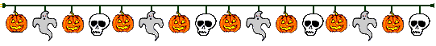

Hrekkjavaka er hátíðisdagur haldin 31. október, ættaður frá keltum þar sem hann hét upphaflega Samhain (borið fram sánj á írsku). Þá voru færðar þakkir fyrir uppskeru sumarsinns og boðin koma vetursins. Hrekkjavaka nefnist á enskri tungu Halloween, sem er annar ritháttur fyrir Hallowe’en. Hallowe’en er svo stytting á nafninu All Hallows’ Evening eða All Hallows’ Eve sem er kvöldið 31. október, vakan fyrir allraheilagramessu. Kirkjan flutti hátíðina allraheilagramessu til fyrsta nóvember til að reyna að taka yfir eldri heiðnar hátíðir á borð við Samhain og veturnætur.
